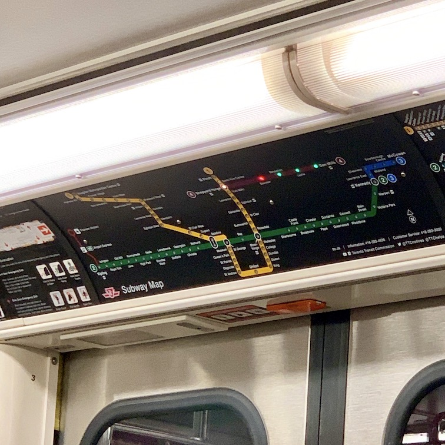

Line 4 is probably Toronto’s most adorable piece of overkill. The stations are bright and airy, the line is remote, and I’m sure it’s useful to someone, but it just feels so excessive. And short.
The entire line is very pink. All stations on this line have pink accents with a beige or grey background that combine to give the entire line a very sterilized, pink aura. This contrasts with, say, the Bloor-Danforth line where each station has its own scheme. An excellent place to see this is the lonesome Don Mills, which is absolutely cavernous, pink, and lonely feeling.
Line 4 is short, adorable, and relatively quiet; but the stations are lonesome and uninspired, and the line is infested with the terribly inconsistent Sheppard signage (obviously). There’s not much to recommend in this, but it’s a fun, albeit short, subway ride.